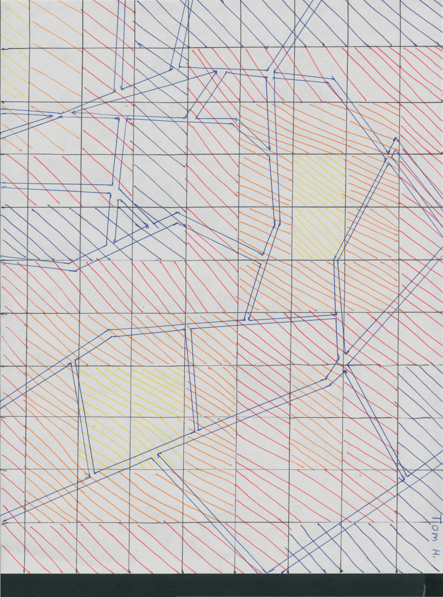
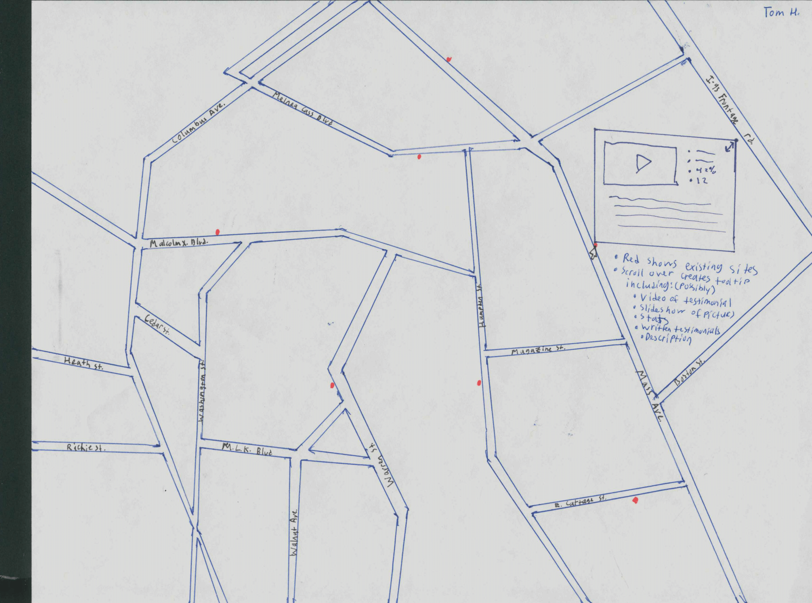
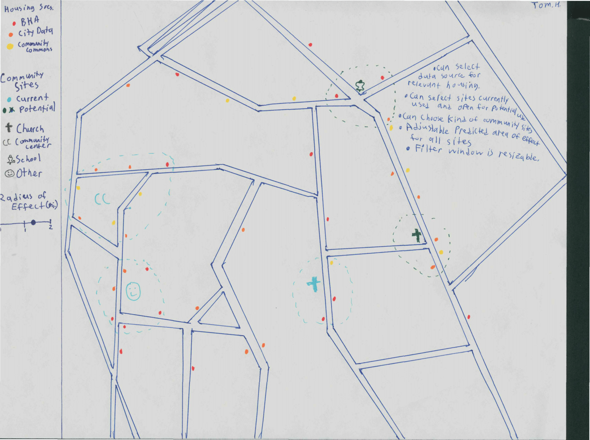
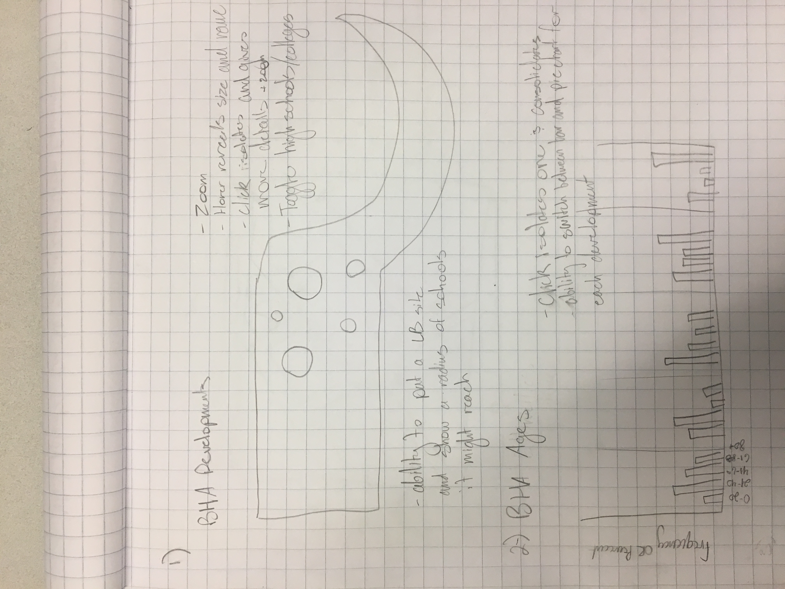
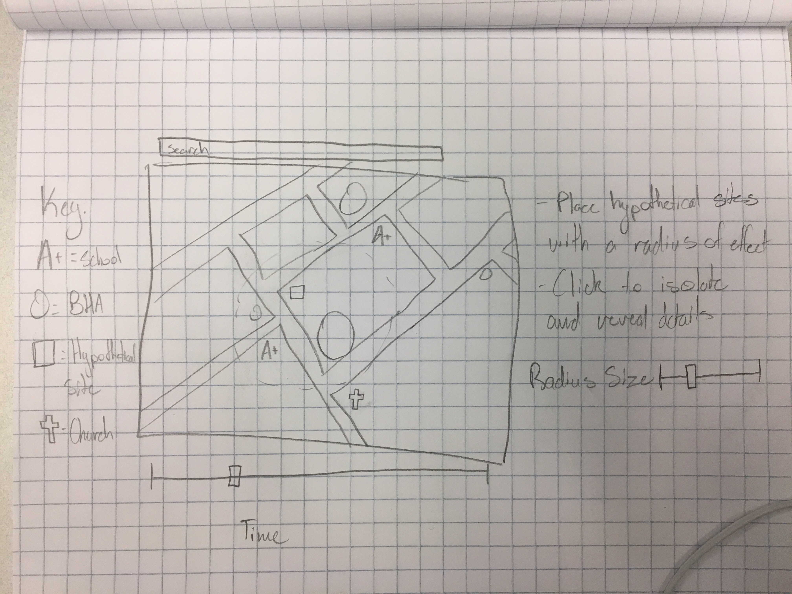

DS4200: Little Brothers - Friends of the Elderly
Motivation
The motivation for this project is to create visualizations for the use of Little Brothers - Friends of the Elderly (LB).
LB is a nonprofit organization that pairs students with elderly people that suffer from loneliness, and loss of self-sufficiency.
The goal of LB chapters is to create genuine relationships and create companionship. We were drawn to the idea of this,
and wanted to aid in their funding efforts by creating this visualization. In our interview with our correspondent at LB,
we asked a few questions to better guide us in what to produce:
- What sort of data do you use to answer questions on a day to day basis?
- What sort of questions do you have trouble answering on a day to day basis?
- What are some of the other roles of people in your office that would use the vis?
- How large is the area that you work with?
- Do you have any data visualizations in mind?
Data
Data for our visualizations comes from public Boston Housing Authority records. Some of the data is categorical, like the
name of the BHA development, and the location of it. There is also a lot of qualitative data about the metrics of each
development. For example, there are metrics on ethnicities, annual incomes, and overall population of the developments.
We also used location data on current Little Brothers program sites to see what their current coverage looked like. Location
data for schools in the Greater Boston Area was also used to show resources in terms of younger volunteers.
Task Analysis
We conducted an interview with Cynthia Wilkerson, our main point of contact for this project. From this we found the main
goal of our visualization, and what tasks Cynthia hopes to be able to perform when using our visualization. Those tasks are:
- Finding locations for LB program sites.
- Demonstrate effects of increased funding for LB.
- Show coverage of LB programs by region.
Design Process
1 / 6

Julian's Visualizations
2 / 6

Tom's heatmap visualization
3 / 6

Tom's map view visualization
4 / 6

Tom's other map view visualization
5 / 6

Ben's map visualization and age frequencies graph
6 / 6

Ben's map view visualization
❮
❯
Final Visualization
We chose to createa an interactive map for our final visualization. Much of our data is geographic in nature, so a map made
the most sense. The map shows Boston Housing Authority Developments, Little Brothers program sites, and hgih schools and colleges
in Boston. The map allows for users to filter and search for specific nodes that are distinguished by color. The size of the node
represents how large the membership is for the developments and schools. The application also allows users to place prospective
Little Brothers program sites to map out where their ideal locations are. A scatterplot shows what BHA developments have the most
members and are furthest from LB program sites.
Data Analysis
In our preliminary run-through of the data, there were a few things to note. Some of the BHA housing developments are much
larger than others. This allows us to see which developments have a higher demand for LB sites based on their populations.
The majority of the people who live in these developments have an annual income of about $5k - $15k. The most common ethnicities
are black, hispanic, and white. The data also records the most common ages for their tenants. This allows us to better narrow
down BHA developments to find the best targets for Little Brothers.
In creating and using our visualization, we found a few areas were underrepresented by Little Brothers. For example, Charlestown
has one of the biggest BHA developments in terms of membership, as well as a nearby school, but no LB city-site.
Conclusion
Our visualization is an interactive map that shows the loactions of BHA developments, high schools and colleges, and
Little Brothers program sites. It is capable of placing prospective LB program sites to show which schools and BHA
developments it might be able to reach. Users can filter through the nodes on screen in a number of different ways.
They can also utilize a scatterplot to see what BHA developments have the most members and are furthest from LB
program sites.